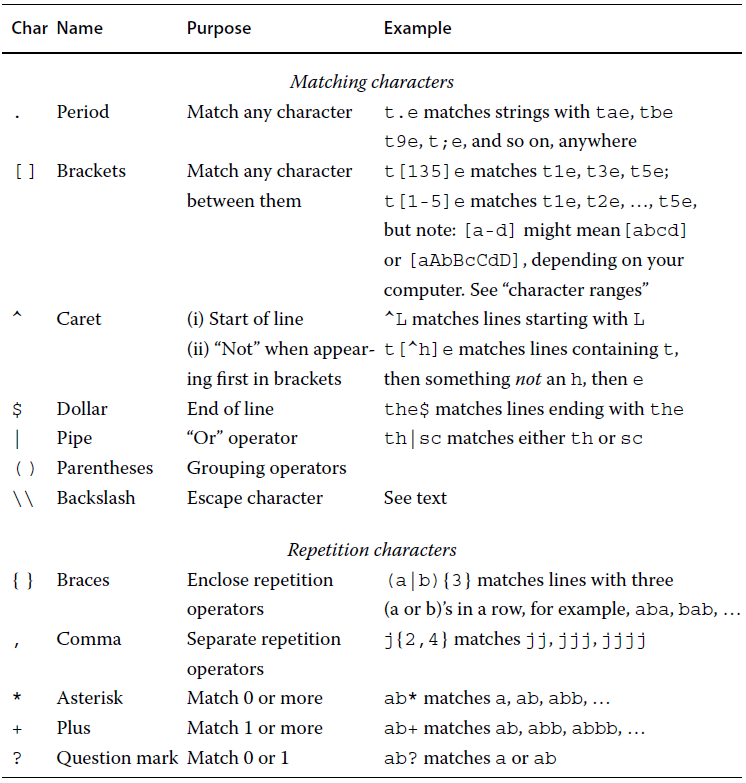

args(matrix)function (data = NA, nrow = 1, ncol = 1, byrow = FALSE, dimnames = NULL)
NULLAt the command line we can look for help through the commands:
help(): gets information on a particular R function, e.g. help(matrix)
?: works the same as the previous one, e.g. ?"matrix"
help.search(): It’s useful if we know the subject rather than the name.
apropos(): returns a vector of names of objects containing that string, e.g. apropos("matrix") returns every object with ‘matrix’ in its name.
args(): displays the set of arguments expected by a given function.
A vector is the basic unit of computation in R. The atomic class which we can see with help(vector) are:
To combines items into a vector we use c() function. Cal also be used to combine vector, as long as all the vectors are of the same sort.
[1] 2.000000 3.000000 3.141593 16.700000 5.000000 -12.000000 -16.000000To set consecutive integers:
Using help(Syntax) It can be seen a list of operators and their precedences, and precedence can always be over-ridden with parentheses.
Also with seq() we can create sequences, with better control of starting points, ending points, lengths, and step sizes. With help we can see:
seq(...)
## Default S3 method:
seq(from = 1, to = 1, by = ((to - from)/(length.out - 1)),
length.out = NULL, along.with = NULL, ...)
# Examples:
seq(17)
seq(0, 1, length.out = 11)
seq(1, 9, by = 2)Logical vectors ofen are constructed by R in response to an operation:
To calculate the number or proportions of elements in a vector we use sum() for count and mean() for proportions:
# like we saw, five out of seven elements in this vector are greater or equal to 37
sum(35:41 >= 37)[1] 5Arithmetic operations on vectors produce vectors.
There are functions which returns a single number (that is also a vector), such as: length(), sum(), mean(), sd(), min(), max(). The function range() returns the smallest and largest values, and summary() returns a vector of summary statistics.
[1] 400 225 100 25 0It’s Computed element by element, that’s why print ‘Inf’, because 101/0 refer to an infinite value.
Loginac vectors can also be combined. The operator | for ‘or’ return TRUE if either element is TRUE; the & operator for ‘and’ return TRUE only if both elements are TRUE. This single version evaluate the condition for every pair of elements from both vectors, the double version ( || , &&) evaluate multiple TRUE/FALSE conditions from left to right, stopping as soon as possible (are useful in if() statements).
Recycling
When a vector does not match with other vector to be operated, the shorter one starts again, recycling it’s elements.
[1] 5 16 107 1008 10009 100010Warning in 5:10 + c(3, 4, 5, 6, 7): longer object length is not a multiple of
shorter object length[1] 8 10 12 14 16 13Recycling a vector of length 1 ((5:10) + 4) is very common, but the other lengths ir rarer. If we see the last warning, It’s better to treat that as an error and try to resolve it.
We can add names to a vector to identify individual entries. R accept letters, numbers, dots, and underscores:
The most common data types are numeric, logical and character. These are some less-common data types:
L on its end ( 246L ), this only makes sense whether really is an integer.rawToChar() function. Reading raw data could be useful to handle the case of unexpected characters.We can see what data type is a vector with typeof() which differentiates between integer and double. Other function called mode() calls them both numeric. The str() function return the data type and the first few entries. And class() is more general operator for complex types.
The functions: is.logical(), is.integer(), is.numeric(), is.character() returns a single logical value whether is TRUE or FALSE. A particularly useful function for more complicated or user-defined clases is is() which lets you specify the class as an argument: is(pi, "numeric").
R modifies the entire vector to be of the more complicated type. If you create a numeric vector but you adds a character, the entire vector will be converted to character:
Types: logical < raw < numeric < complex < character.
Other group of functios are as. to convert vectors:
as.numeric: a character will be converted to a numeric if it has the syuntax of a number.
as.logical: Numeric values that are zero become FALSE, otherwise become TRUE. Sometimes numbers that you expect to be zero aren’t because of floating-point error.
Numeric, non-missing values never produce NA when converted to logical.
subsetting or extracting is to pull out a piece of a vector.
We can use a numeric expression to compute a subscript but only if we are sure that expression is an integer.
[1] 104 102[1] 105Negative numbers omit this elements, but you cannot mix negative and positive numbers. Zeros are permited but they are ignored by R.
A logical subscript is a logical vector of the same length as the thing being extracted from. TRUE are returned, FALSE are not.
[1] FALSE FALSE FALSE FALSE TRUE TRUEWe can use the last logical vector to extract elements of age, or combining it with other vectors.
people <- c("Yoshua", "Mery", "Alex", "John", "Lee", "Cindy")
# To which people corresponds their age greater than 60
people[age > 60][1] "Lee" "Cindy"[1] "Lee" "Cindy"Errors to avoid:
# R convert the logical subscript to numeric
# the extraction produces the first element of the vector two times
people[0 + age.gt.60][1] "Yoshua" "Yoshua"# With the negative sign, R convert again into numeric values
# The extraction drops the first value and rest are returned
people[-age.gt.60][1] "Mery" "Alex" "John" "Lee" "Cindy"# This is, probably, the intended form:
# The operator ! to print which values are not greater than 60
people[ !age.gt.60 ][1] "Yoshua" "Mery" "Alex" "John" The which() function can be used to convert a logical vector into a numeric. It returns the indices of the element that are TRUE.
To find the location of every minimum value in the variable ‘y’ we can use which(y == min(y). The alternative are which.min() and which.max() but only select the first index with the minimum or maximum value.
A name subscript will need to be a character.
This usually happens when all of the elements of a logical subscript are FALSE.
If a zero-length vector is used as the condition in an if() statement, an error results:
If we extract elements, we can use the extraction operation on the left side of an assigment for replacing.
[1] 101 102 103 104 105[1] 101 102 203 104 105[1] 101 102 -999 104 -999 a b c
201 202 203 a b c
201 302 203 It is possible too combine two vectors (if the vectors are different types, R convert them) and also assign elements of a vector out past its end.
When we try to extract an item that was never present in a vector appears missing values. NA values rule: any computation with an NA itself becomes an NA. With mathematical computations we can use na.rm = TRUE argument to compute the result after omitting missing values.
We can use anyNA() function to determine whether any of the values are missing (TRUE or FALSE). Also, is.na() fuction return TRUE or FALSE for every element in the vector. We can use where(is.na(vector))to find the numeric indices of the missing elements.
[1] 101 102 NA 104 NA 106[1] FALSE FALSE TRUE FALSE TRUE FALSE[1] 3 5
Mean 'nax' vector: [1] NA[1] 103.25We can remove missing values with vec[!is.na(vec)] which return non-missing entries, but na.omit() function deletes the missing values but also keeps track of where in the vector they used to be. This information is stored in vector’s ‘attributes’:
[1] 101 102 104 106[1] 101 102 104 106
attr(,"na.action")
[1] 3 5
attr(,"class")
[1] "omit"[1] 3 5
attr(,"class")
[1] "omit"NULLWe can have a vector ‘b’ with data and a vector ‘a’ as index which contain NA values. If we use ‘a’ as filter, it returns every coincident value and missing value, this behaviour can be changed with b[!is.na(a) & a == 2]
[1] 101 102 103 104[1] 1 2 NA 4[1] 102 NA[1] 102NaN : Special value, means “Not a Number”. It si the result of specific computations such as 0/0. NaN is considered a missing value.Inf : Appears when a positive number is accidentally divided by zero. Inf values are not missing.Inf + NA = NA
NaN + NA = NaN
We generally wanto to identify any of these values: the function is.finite() produces TRUE for numbers that are neither NA nor NaN nor Inf. It serves as a check on valid values. The command all(is.finite(vector) ) is to see a numeric vector elements which are not special values.
NULL : is an object with zero length, no contents, no class. It often arise trying to access an element which does not exist. The function is.null() is for testing NULL values. If you index using a NULL value the result will be a vector of length 0.Table( ) functionTable() produce a table returning for each unique value the number of times that value appears.
[1] "red" "red" "red" "red" "blue" "blue" NA "green" "green"
[10] "green"vec
blue green red
2 3 4 table() arguments:
useNA =
"no" : default option. Exclude NA values."ifany" : show an entry for NA if there are any."always" : show an entry for NA whether there are any NA values or not.exclude =
c(NA, NaN) : default option.
We can add a value of the vector to exclude, also we can pass NULL.
vec
blue green red <NA>
2 3 4 1 vec
blue red <NA>
2 4 1 Also, we can pass to table() function two vectors to create a two-way table (cross-tabulation). in R a two-way table is treated the same as a matrix.
vec2
vec east north south west
blue 1 0 1 0
green 0 0 0 3
red 0 2 2 0
<NA> 1 0 0 0A three and higher-way tables are produced when you pass three or more equal-length vectors.
For very large vectors, the data.table() function in the data.table package may prove more efficient than table().
The xtabs() function is useful for creating more complex tables.
prop.table() : passing a variable with table assigned produces the proportions of the total counts in the table by cell (or row, or column). The second argument references 1 to rows, or 2 to columns.year <- rep (2015:2017, each=5)
market <- c("a", "a", "b", "a", "b", "b", "b", "a", "b",
"b", "a", "b", "a", "b", "a")
cost <- c(64, 87, 71, 79, 79, 91, 86, 92, NA,
55, 37, 41, 60, 66, 82)
# assign a table with the vectors we want to 'tab'
tab <- table(market, year)
tab year
market 2015 2016 2017
a 3 1 3
b 2 4 2 year
market 2015 2016 2017
a 0.20000000 0.06666667 0.20000000
b 0.13333333 0.26666667 0.13333333 year
market 2015 2016 2017
a 0.6 0.2 0.6
b 0.4 0.8 0.4margin.table() : produce the marginals totals from a table.
addmargins() : to a given table incorporates those totals producing a new row and column by default. Passing as second argument 1 or 2, you can specified if only wants rows or columns.
margin.table function for columns:year
2015 2016 2017
5 5 5
addmargins function in the table: year
market 2015 2016 2017 Sum
a 3 1 3 7
b 2 4 2 8
Sum 5 5 5 15tapply() : the arguments are, first the vector where perform the computation, second the vector with the index to group, and then the function to apply. To group with more than one vector (index) we can use a list().There are NA in cost? [1] TRUE2015 2016 2017
64 55 37 2015 2016 2017
a 76.66667 92.00000 59.66667
b 75.00000 77.33333 53.50000It is posible to use with tapply() custom fuctions, as an example, for (x) return the sum of the squares of each entry of x:
round() : to round a number with specific amount of decimals. Passing a negative number as second argument will round the nearest power of 10.
signif() : retain a specific number of digits.
trunc() : discards the decimal part returning an integer.
floor() ; ceiling() : round to the next lower or higher integer respectively.
[1] 123.4567
Round function to 3 decimals: [1] 123.457
Round function (-1) to nearest power of 10: [1] 120
Signif function to 4 numbers: [1] 123.5
Trunc function: [1] 123
Floor function to round to the lower integer: [1] 123
Round function to round to the higher integer: [1] 124sort() : sorting from smallest to largest. It will drop NA and NaN values by default.
decreasing=TRUE will reverse the order.na.last will add NA values, TRUE at the end and FALSE at the beginning.order() : returns the indices which can be used to sort a vector.
na.last as TRUE by default. TRUE at the end and FALSE at the beginning.[1] "Yoshua" "Mery" "Alex" "John" "Lee" "Cindy" [1] 123 456 789 456 654 987
Sorting 'people' by their scores (descending): [1] "Cindy" "Alex" "Lee" "Mery" "John" "Yoshua"cat("\nOrdering people by their scores, and in case
of a tie using their names alphabetically.: \n")
Ordering people by their scores, and in case
of a tie using their names alphabetically.: [1] "Yoshua" "John" "Mery" "Lee" "Alex" "Cindy" To find values that overlap between two vectors we can use %in% function. For example, we can use a command a %in% b which will return a vector the same length as ‘a’ with a logical indicator whether each element is found in ‘b’. Witch table(a %in% b) we get the number of element in ‘a’ that were not found in ‘b’.
[1] TRUE FALSE TRUE FALSE FALSE
FALSE TRUE
3 2 [1] 1 3union() : returns the elements in either passed vectorsintersect() : returns the elements which are in both passed vectorssetdiff() : returns the elements of ‘a’ not present in ‘b’Union 'a' and 'b': [1] "g" "5" "b" "J" "!" "a" "c" "d" "e" "f" "h" "i" "j" "k" "l" "m" "n" "o" "p"
[20] "q" "r" "s" "t" "u" "v" "w" "x" "y" "z"Intersect 'a' with 'b':[1] "g" "b"Defferent elemenets of 'a' in 'b':[1] "5" "J" "!"anyDuplicated() : returns the duplicated values in a vector
unique() : returns the distinct values, including NA and NaN.
duplicated() : returns a logical vector with TRUE per duplicated value (not the first value).
fromLast=TRUE reads from the end to the beginning. Using union() you can combine fromLast=TRUE and fromLast=FALSE to identify all duplicates.Duplicates?[1] "j" "j" "x"let
a b c d e f g h i j k l m n o p q r s t u v w x y z
1 1 1 1 1 1 1 1 1 3 1 1 1 1 1 1 1 1 1 1 1 1 1 2 1 1 let
j x
3 2 [1] "j" "x"
1 2 3
24 1 1 Matching is identify where in a vector we can find the values in another vector. The function match() is a more powerful version of %in%.
match() : given two vectors returns where the element from ‘a’ is in ‘b’. By default returns NA for no matches, we can change this with nomatch=0 argument.names1 <- c("Jensen", "Chang", "Johnson", "Lopez", "McNamara", "Reese")
names2 <- c("Lopez", "Ruth", "Nakagawa", "Jensen", "Mays")
match(names1, names2)[1] 4 NA NA 1 NA NA[1] "Jensen" "Lopez" The ‘Run length enconding’ function is rle() which returns the number of repetitions and length.
Run Length Encoding
lengths: int [1:5] 1 2 1 3 2
values : chr [1:5] "a" "b" "a" "c" "a"The previous output show, with length 1 value ‘a’ followerd by ‘b’ with length 2, again ‘a’ length 1 and then ‘c’ with length 3, to finish with ‘a’ twice.
Essentially is a vector two-dimensional like a rectangle. Every element of a matrix needs to be of the same type (numeric, logical or character).
A matrix is filled column by column.
Using length() we get the total number of elements in the matrix, and using dim() we get the dimension as number of rows and columns.
cbind() : combines a set of vectors into a matrix column by column.
rbind() : combines a set of vectors into a matrix row by row.
If the vectors to combine have unequal length, R will recycle.
With matrix in the same way as vectors we can do arithmetic operations, that will be element by element. Also, t(A) transposes a matrix, and solve() inverts a matrix.
To extract and assign new values to elements the process is similar to a vector but now we have to pass two coordinates:
[,1] [,2] [,3]
[1,] 101 106 111
[2,] 102 107 112
[3,] 103 108 113
[4,] 104 109 114
[5,] 105 110 115[1] 106 [,1] [,2] [,3]
[1,] 101 106 111
[2,] 103 108 113
[3,] 104 109 114
[4,] 105 110 115
Obtaining row 4 and 2, and cols 3 and 1, in that order: [,1] [,2]
[1,] 114 104
[2,] 112 102To create a vector from a matrix we can use c(), it will use the first column, then the second and so on. To extract data row by row, we can use t() to transpose the matrix first like c(t(a)).
[1] 101 102 103 104 105 106 107 108 109 110 111 112 113 114 115 [,1] [,2] [,3] [,4] [,5]
[1,] 101 102 103 104 105
[2,] 106 107 108 109 110
[3,] 111 112 113 114 115 [1] 101 106 111 102 107 112 103 108 113 104 109 114 105 110 115If we ask to a matrix for one column we’ll get a vector, because dimensions of length 1 are usually dropped by default. We can use drop=FALSE argument to prevent that.
[1] 106 107 108 109 110 [,1]
[1,] 106
[2,] 107
[3,] 108
[4,] 109
[5,] 110With dimnames() we get rows and columns names. rownames() and colnames() to get rows and columns names respectively. As well as with names() and vectors, we can asign names to columns and rows with these functions.
year <- rep (2015:2017, each = 5)
market <- c(2, 2, 3, 2, 3, 3, 3, 2, 3, 3, 2, 3, 2, 3, 2)
(tbl <- table (market, year)) year
market 2015 2016 2017
2 3 1 3
3 2 4 2
Collaing to colnames(): [1] "2015" "2016" "2017"
Assigning new names to columns: year
market Y15 Y16 Y17
2 3 1 3
3 2 4 2Just like before, we can call for the column name or row identifier to get them:
Built in functions which works across columns or rows: colSums(), rowSums(), colMeans(), rowMeans().
apply() : Useful to apply a custom function.
first argument, the matrix to which apply the function.
The direction, 1 for across rows, 2 for down columns.
The function to be applied.
[,1] [,2] [,3]
[1,] 101 106 111
[2,] 102 107 112
[3,] 103 108 113
[4,] 104 109 114
[5,] 105 110 115[1] 318 321 324 327 330[1] 318 321 324 327 330[1] 318 321 324 327 330We can guet a matrix result for the apply() function. If we compute across rows, sometimes will change the shape, we can use t() to prevent that.
[,1] [,2] [,3]
[1,] 101 106 111
[2,] 105 110 115 [,1] [,2]
[1,] 101 111
[2,] 102 112
[3,] 103 113
[4,] 104 114
[5,] 105 115When we are looking for specific values we can get vectors with different lengths, in that case R returns a list.
The function apply() is very useful to count the number of missing values. Next, let’s create a matrix using a semicolon to pass multiple commands in one line, also the multiple assigment operation to assign several things at once:
[,1] [,2] [,3]
[1,] 101 106 111
[2,] 102 107 112
[3,] NA 108 113
[4,] 104 109 114
[5,] 105 110 NA
Sum of NA in each column: [1] 1 0 1Tracking NA values with which() to identify the position on the vector will return a number of the position for each NA. However, using arr.ind=TRUE argument we’ll obtain the coordinates:
With which() as a subscript we have the possibility to extract specific elements.
b <- matrix (1:20, nrow=4, byrow=T)
b <- cbind(b, c(3, 2, 0, 5))
colnames(b) <- c("P1", "P2", "P3", "P4", "P5", "Use")
rownames(b) <- c("Spring", "Summer", "Fall", "Winter")
b P1 P2 P3 P4 P5 Use
Spring 1 2 3 4 5 3
Summer 6 7 8 9 10 2
Fall 11 12 13 14 15 0
Winter 16 17 18 19 20 5Given the previous matrix, the Use column specify which element of the row we want get. To generate this coordinates, we are going to generate a matrix, the first column will be the number of rows and the second column ‘Use’. Then we can pass that matrix as a subscript to ‘b’ and extract the elements.
A matrix with three or more ways is called Array in R. We can encounter this while constructing a higher way table():
who <- rep( c("Mery", "Kelly"), c(2, 6))
when <- rep( c("AM", "PM"), 4)
worked <- c(T, T, F, T, F, T, F, T)
sch <- table(who, when, worked)
sch, , worked = FALSE
when
who AM PM
Kelly 3 0
Mery 0 0
, , worked = TRUE
when
who AM PM
Kelly 0 3
Mery 1 1The function aperm() is like t() but for higher-way arrays. Also we can use c() to produce a vector, and apply() or prop.table() works too.
A list can have vector or diferent types and sizes, also might include matrices, lists or other R objects. Usually a list is returned by a modeling function in R but we can create a list with list():
$alpha
[1] 1 2 3 4
$beta
[1] "yes"
$delta
function (x, base = exp(1)) .Primitive("log")
[[4]]
[1] 69split() : divides a vector into pieces according to the value of another vector. Returns a list. Missing values in the second vector passed will be dropped.age <- c(31, 33, 42, 54, 65, 74, 24)
gender <- c("F", "M", "F", "M", "M", "F", "F")
cat("Split age by gender:\n")Split age by gender:$F
[1] 31 42 74 24
$M
[1] 33 54 65
Split ages when age is greater than 60$`FALSE`
[1] 31 33 42 54 24
$`TRUE`
[1] 65 74We can see with length() function the number of elements inside a list, and with lengths() function the length of each element.
[1] 2
Lengths: F M
4 3 The str() command gives a description of every element on the list:
List of 4
$ alpha: int [1:4] 1 2 3 4
$ beta : chr "yes"
$ delta:function (x, base = exp(1))
$ : num 69[1] "list"Working with a list, the rule says single backets produce a list, while double backets and dollar signs extract contents.
Extracting the content of element 4 as a vector: [1] 69
Extracting the element 1 as a list: $alpha
[1] 1 2 3 4
Extracting inside alpha the elements 2 and 4: [1] 2 4The function names() also works with lists returning the names of each element and “” if the element no have name. We can assign names with it too.
When we extract an element from a list with dollar sign, we do not need to know the complete name, it is enough if it’s unambiguous:
To assign new values to an element we need the full name, otherwise will be creating a new ítem.
List of 4
$ alpha: int [1:4] 1 2 3 4
$ beta : chr "yes"
$ delta: logi [1:4] TRUE FALSE FALSE TRUE
$ : num 69To remove an element from a list we can assign a NULL value:
List of 3
$ alpha: int [1:4] 1 2 3 4
$ delta: logi [1:4] TRUE FALSE FALSE TRUE
$ : num 69unlist() : try to turn the list into a vector:Using dimnames() function we can see the names from a matrix as list format and also we can asign names:
P1 P2 P3 P4 P5 Use
Spring 1 2 3 4 5 3
Summer 6 7 8 9 10 2
Fall 11 12 13 14 15 0
Winter 16 17 18 19 20 5[[1]]
[1] "Spring" "Summer" "Fall" "Winter"
[[2]]
[1] "P1" "P2" "P3" "P4" "P5" "Use" P1 P2 P3 P4 P5 Use
Spring 1 2 3 4 5 3
Summer 6 7 8 9 10 2
Autumn 11 12 13 14 15 0
Winter 16 17 18 19 20 5An important list returned from a function is the list from options() which contain elements describing things like number of digits to be displayed, scientific notation, the editor… With names(options()) we can see the names of the current options.
A data.frame is a list of vector with the same length which can be arrayed in a matrix-like rectangle. Each vector in the list will be the columns. To construct a data frame we use data.frame() function.
df <- data.frame (
Who = letters[1:5],
Cost = c(3, 2, 11, 4, 0),
Paid = c(F, T, F, T, T),
stringsAsFactors=FALSE
)
row.names(df) <- as.character (row.names(df))
df Who Cost Paid
1 a 3 FALSE
2 b 2 TRUE
3 c 11 FALSE
4 d 4 TRUE
5 e 0 TRUEA data frame must have a column and row names, if they are not assigned R will create them. Also R ensure that column names are valid and not duplicated. For columns we can use colnames() or dimnames() to assign it, or names() with a list. For row names we have row.names() or rownames() functions.
By default the data.frame() function turns character vectors into factors but rarely we want it in data cleaning. We can chage this with stringAsFactors=FALSE argument.
head() : return the first six rows of a given dataframe. Second argument is n=6 to specify a number of rows. A negative number returns the last n rows.
tail() : return the last six rows of a given dataframe. Second argument is n=6 to specify a number of rows.
str() : compact representation of the data frame with data type per column.
dim() : returns the dimension, number of rows and columns.
summary() : returns a brief description of each column.
Because a data frame can have differnt classes (data types) in its colums, the missing values can be of different classes too. A numeric vector will have numeric NA which is different to logical NA from a logical vector.
is.na() : returns a logical matrix showing which elements are missing.
anyNA() : returns TRUE or FALSE to the question There are missing values?
na.omit() : omit the observations (rows) of the data frame in which one or more elements is missing. Also keeps a track, we can see the deleted observations with attr(df, "na.action") ; attr(df, "class").
Extract and Assignment
With data frames we can use both matrix and list styles of subsetting operations. In data frames when we select a row returns a data frame because can store different types of data. Selecting a column will produce a vector.
Using a doble bracket or a dollar sign will produce a vector. Using the name produce a data frame.
Who Cost Paid
4 d 4 TRUE Who Cost Paid
2 b 2 TRUE
4 d 4 TRUE
5 e 0 TRUE Who Cost Paid
1 a 3 FALSE
3 c 11 FALSE Cost
1 3
2 2
3 11
4 4
5 0To extract a vector from a dataframe’s column:
[1] 3 2 11 4 0[1] 3 2 11 4 0[1] 3 2 11 4 0Passing drop=FALSE argument we avoid to extract a vector:
Who Paid
1 a FALSE
2 b TRUE
3 c FALSE
4 d TRUE
5 e TRUE[1] "a" "b" "c" "d" "e" Who
1 a
2 b
3 c
4 d
5 eTo delete a column we can asign NULL to that column: df$Paid <- NULL
In a data frame or list if we pass a subscript for unexistance row wil produce one row with NA values. Sometimes happens when we delete a row and a program or ourselfs try to access to that row by name.
If we try to use apply() in a data frame, the function will convert it to a matrix, and the whole matrix is of the same data type. Also, we cannot use apply() to a list because does not have dimensions.
lapply() : returns a listsapply() : runs lapply() and tries to make the output into a vector or a matrix. But if the return have different lengths, it will need to return a list. If it try to return items with diferent types, will convert these to a common type, then its better in these case use lapply().First the data is split, then a function is applied to each piece, and the results recombined. The function tapply() do exactly that, but also we can use split() and sapply() or lapply().
df2 <- data.frame (
Age = c(35, 24, 42, 63, 56, 66),
Spouse = c(31, 36, 40, 59, 60, 60),
Gender = c("F", "F", "M", "F", "M", "M")
)
split (df2$Age, df2$Gender)$F
[1] 35 24 63
$M
[1] 42 56 66
Using sapply() to obtain the mean by gender : F M
40.66667 54.66667 Above, split() divides Gender with Age values, then sapply() use mean() function to each part and returns a vector with the results (is the recombine). Let’s see tapply() :
We can use split() on a data frame unlike tapply(), doing that the data frame will be divided and then we can use sapply() or lapply() to each part.
$F
Age Spouse Gender
1 35 31 F
2 24 36 F
4 63 59 F
$M
Age Spouse Gender
3 42 40 M
5 56 60 M
6 66 60 M
Summary differencing Gender: $F
Age Spouse Gender
Min. :24.00 Min. :31.0 Length:3
1st Qu.:29.50 1st Qu.:33.5 Class :character
Median :35.00 Median :36.0 Mode :character
Mean :40.67 Mean :42.0
3rd Qu.:49.00 3rd Qu.:47.5
Max. :63.00 Max. :59.0
$M
Age Spouse Gender
Min. :42.00 Min. :40.00 Length:3
1st Qu.:49.00 1st Qu.:50.00 Class :character
Median :56.00 Median :60.00 Mode :character
Mean :54.67 Mean :53.33
3rd Qu.:61.00 3rd Qu.:60.00
Max. :66.00 Max. :60.00
Let's see what happens with sapply: F M
[1,] "Min. :24.00 " "Min. :42.00 "
[2,] "1st Qu.:29.50 " "1st Qu.:49.00 "
[3,] "Median :35.00 " "Median :56.00 "
[4,] "Mean :40.67 " "Mean :54.67 "
[5,] "3rd Qu.:49.00 " "3rd Qu.:61.00 "
[6,] "Max. :63.00 " "Max. :66.00 "
[7,] "Min. :31.0 " "Min. :40.00 "
[8,] "1st Qu.:33.5 " "1st Qu.:50.00 "
[9,] "Median :36.0 " "Median :60.00 "
[10,] "Mean :42.0 " "Mean :53.33 "
[11,] "3rd Qu.:47.5 " "3rd Qu.:60.00 "
[12,] "Max. :59.0 " "Max. :60.00 "
[13,] "Length:3 " "Length:3 "
[14,] "Class :character " "Class :character "
[15,] "Mode :character " "Mode :character "
[16,] NA NA
[17,] NA NA
[18,] NA NA The previous sapply() will try to construct a vector or matrix converting everything to a common type.
A function to produce the same result is by() but without letting you save the list. It will performs the summary() operation on each column, broken down by gender:
df2$Gender: F
Age Spouse Gender
Min. :24.00 Min. :31.0 Length:3
1st Qu.:29.50 1st Qu.:33.5 Class :character
Median :35.00 Median :36.0 Mode :character
Mean :40.67 Mean :42.0
3rd Qu.:49.00 3rd Qu.:47.5
Max. :63.00 Max. :59.0
------------------------------------------------------------
df2$Gender: M
Age Spouse Gender
Min. :42.00 Min. :40.00 Length:3
1st Qu.:49.00 1st Qu.:50.00 Class :character
Median :56.00 Median :60.00 Mode :character
Mean :54.67 Mean :53.33
3rd Qu.:61.00 3rd Qu.:60.00
Max. :66.00 Max. :60.00 Sometimes the task split, apply and combine can be performed altogether, but but other times might require separate functions. Packages like dplyr for data frames or plyr for lists and arrays. Both are intended to be fast and efficient and to permit parallel computation.
A data frame with all of its values are logical or numeric when is converted to a matrix the numeric type is preserved.
To convert vectors to another class exists as.numeric() and the other as. functions, also there are as.matrix() and as.data.frame() to convert data frames to matrices and vice versa. It is useful for all-numeric data frames and older functions that require numeric matrices.
It is recommended to users to use long names for data objects and columns for increases readability. But sometimes leads to use long line expression like:
CustPayment2016$JanDebt + CustPayment2016$FebPurch - CustPayment2016$FebPmt
These can be handled with the functions:
with() : to perform operations on a data frame. First argument is the data frame, then the expression to be performed. Cannot be assigned to.
with ( CustPayment2016, JanDebt `FebPurch - FebPmt )
within() : works in the same wey but unlike with(), this function can be assigned.
CustPayment2016 <- within ( CustPayment2016, FebDebt <- JanDebt + FebPurch - FebPmt )
For beginners and to use then interactively and not for programming there are functions to make the subsetting and transformation process easier ( but generally its avoided):
subset() : To extract rows given a condition:
transform() : To specify transformations to existing columns and returns the updated version.
To change the way we write functions we can use a ‘pipe’ as %>% provided by magrittr package. The pipe allows a function’s output to serve as input to another function. Not every function is suitable for piping, the pipes are particularly useful for nested functions.
We can create a vector with order() which contain indices sorted by the variables inside.
df
new.order <- order( df$ID, df$Date )
# convenient alternative:
new.order <- with ( df, order (ID, Date) )
# 'new.order' have a vector with the rows sort by increasing ID
# To have the data frame with the new order:
df[new.order, ]For duplicated values, we can use unique() passing the data frame to get every non-duplicated row. Just the floating-point error might be a problem detecting identical rows.
sample() : first argument is the number of total rows, the second argument is the size of the sample we want. By default the result is a random set of integers without replacement. The row number of sampled data frame will be the same that originals.
The class Date internally store an integer representing the number of days since a particular origin date.
Dates can be represented in many shapes, american’s form, rest-of-the-world form, etc. the as.Date() function converts text into Date class.
# First '0' will be converted into origin date.
dd <- as.Date ( c(0, 18252:18255), origin = "1970-01-01" )
dd[1] "1970-01-01" "2019-12-22" "2019-12-23" "2019-12-24" "2019-12-25"Also can convert text based representations in Date class such as “7/4/2019”. In this case we have to pass format= argument, and the format string had to contain the same pattern that the input text:
%b ; %B : name of the month%a ; %A : name of the day of the week%d : day of the month%m : month in number%y ; %Y : for the yy or YYYY year.%F : Equivalent to %Y-%m-%d.%x : Date. Locale-specific on output, "%y/%m/%d" on input.[1] "2016-02-29" NA "2017-09-30"The names of the days of the week and the months of the year are in computer’s locale, to read other languages we can change locales R.
[1] NA NA[1] "Spanish_Spain.1252"[1] "2016-10-03" "2017-03-26"[1] "English_United Kingdom.1252"The functions months() and weekdays() returns the month name and weekday from passing Date object. It can be added the abbreviate=TRUE argument to abbreviate the output.
To extract the numeric month, day or year it can be used the format() function and then using as.numeric() to convert the character output to numeric.
dt1 <- as.Date ("2024/05/17")
dt2 <- as.Date ("2024-07-03")
# Extracting weekdays:
weekdays( c(dt1, dt2) )[1] "Friday" "Wednesday"[1] "May" "Jul"[1] "Q2" "Q3"[1] "24" "24"[1] "17" "03"[1] "Friday, May 17, 2024" "Wednesday, July 03, 2024"The difference between dates is a period of time stored as difftime object. Functions such as mean() and range() works well but hist() or summary() fails producing the expected results.
Usually we will convert difftime objects to numeric with as.numeric() function, for that will be a good habit to specify units = "days" argument (with the unit we want.
Date1 adding 30 days: [1] "2024-06-16"
Difference between date1 and date2: Time difference of 47 days
Difference to numeric: [1] 47[1] "days"
To numeric but in weeks: [1] 6.714286POSIXt ObjectsPOSIXlt object is implemented as a list, meanwhile POSIXct object is like a number useful is will be stored in a column.
[1] "2017-01-17 14:51:23 CET" sec min hour mday mon year wday yday isdst zone gmtoff
"23" "51" "14" "17" "0" "117" "2" "16" "0" "CET" NA [1] 17In this last example we can see January is month 0 then December is month 11. Weekday is 0 to 6 starting on Sunday.
Here it can be used too the weekdays(), months() and quarters() functions, as well as format() function. This will be less efficient than the list-type extraction, and it is recommended use POSIXct objects where possible because changing time zones with POSIXlt can encounter unexpected behavior.
When we convert a Date object to POSIXt the time will be 00:00 (midnight), and when it converted from POSIXt to Date, the time will be truncated.
as.POSIXct() and as.POSIXlt() works like as.Date() but the date can be followed by 24-hour clock time (or 12h with AM/PM).
[1] "2017-03-30 00:26:08 CEST"[1] "2017-03-29 22:26:08 UTC"
Looking for diferences: [1] 0All the objects in a vector of length >1 including weekdays() and months() will be displayed with the local time zone. For a single object these functions refer to the time zone of the object:
[1] "2017-03-30 00:26:08 CEST" "2017-03-30 00:26:08 CEST"[1] "Thursday" "Thursday"[1] "Wednesday"The time zone can be converted changing tzone attribute:
attr ( ct1, tzone = "UTC" )
The help of Sys.timezone() containing the names of the time zones. When a POSIXct object is converted to Date object is rendered in UTC time zone by default:
Example of POSIXct formatting flexibility:
[1] "Mon Sep 23 12:10:00 2024"[1] "2024-09-23 12:10:00 CEST"[1] "2024-09-23"Math Functions
Date and POSIXt objects are numeric, then we can use some functions such as range(), max(), min(), mean(), median(), which will produce vectors of date objects.
diff() : computes differences between adjacent elements in a vector.
The function table() works too but does not work on POSIXlt (list) objects.
We can also create sequences with seq() function, it can be specified by="day" argument:
[1] "2020-03-11" "2020-03-14" "2020-03-17" "2020-03-20" "2020-03-23"[1] "2020-03-11 13:05:00 CET" "2020-03-11 13:05:02 CET"
[3] "2020-03-11 13:05:04 CET"
Sequence by days:[1] "2020-03-11 13:05:00 CET" "2020-03-12 13:05:00 CET"
[3] "2020-03-13 13:05:00 CET"
By day without altering the hour: [1] "2020-03-11 13:05:00 CET" "2020-03-12 13:05:00 CET"
[3] "2020-03-13 13:05:00 CET"With POSIXt object using by="day" the clock moves 24 hours, but by="DSTday" moves 1 day preserving the clock.
We have to be more careful with POSIXt and difftime objects:
d1 <- as.POSIXct ("2017-05-01 12:00:00")
d2 <- as.POSIXct ("2017-05-01 12:00:06")
d3 <- as.POSIXct ("2017-05-07 12:00:00")
cat("Are equal (d2 - d1) and (d3 - d1) ? :\n")Are equal (d2 - d1) and (d3 - d1) ? :[1] FALSE
Same operation but using as.numeric() : [1] TRUE
Same as.numeric but with units=days:[1] FALSEIn a vector dates of different classes should not be combined, a good practice is to use a function to force all the elements to have the same class.
[1] "2017-05-01 12:00:00 CEST" NA [1] NA 1493632800[1] NA "2017-05-01"[1] NA "2017-05-01 12:00:00 CEST"The first c(d1, NA) knows what to do with the NA value because d1 is first, but the second one do not, then convert the vector into numeric. That not happens in the third and fourth command when we specify which class is the NA value.
Apply() on DatesOften a data set will have a series of dates in each row, like with a data frame is better to use lapply() and sapply() functions:
dt.df <- data.frame(
Start = c( seq (as.Date("2020-05-03"), by="months", length = 6) )
)
# Creating a new column
dt.df$End <- c( seq (as.Date("2021-06-02"), by="months", length = 6) )
dt.df Start End
1 2020-05-03 2021-06-02
2 2020-06-03 2021-07-02
3 2020-07-03 2021-08-02
4 2020-08-03 2021-09-02
5 2020-09-03 2021-10-02
6 2020-10-03 2021-11-02The function data.frame() can be used with two data frames inside and will be joined. Also cbind() function is useful. Both can incorporate vectors and matrices as well. Remember that characters will be converted into Factors unless stringAsFactors=FALSE.
It is a good idea to check duplicated column names before combining, with intersection() function for example. If there are duplicated names R will use make.names() to generate unique alternatives (adding .1 .2 .3 …).
[1] "Who" "Cost" "Paid"[1] "Age" "Spouse" "Gender"# Forcing 'intersect' to get a column names coincidence
df2$Paid <- c(NA,NA,NA,NA,NA,NA)
intersect( names(df), names(df2) )[1] "Paid"With rbind() we can combine data frames vertically (by rows). The columns in both data frames have to be the same, number and name, but not the order. Also the columns it’s recommended to have the same class or R will convert to the common class. Pass stringAsFactor=FALSE with rbind() to ensure the character columns.
# Checking column names on two data frames:
nam1 <- names (df1)
nam2 <- names (df2)
all (sort (nam1) == sort (nam2) )Above we sort the names of each data frame with a comparation expecting TRUE as result.
# Checking column classes
cs1 <- sapply (df1, class)
cs2 <- sapply (df2, class)
isTRUE (all.equal (cs1, cs2[names (cs1) ] ) )And now we compare both classes.
all.equal() : compares two objects and returns TRUE if the match. Also returns a report if there are differences.isTRUE() : returns TRUE if its argument is a single TRUE (expected for all.equal() ) or FALSE if there are something else.When the rows have basic numeric names R will adjust the resulting rows. But with modified row names R will try to keep them and taking care of the matches.
If we have a large number of data frames, for example in a list as the result of lapply() function, we can use do.call() to combine them. The function takes the name of a function to be run and a list of arguments and run the function with those arguments:
In the command above we are assuming that data frames meet the rbind() criteria. Other basic example can be: do.call("log", list(x = 32, base = 2) where the list are the argument of log().
To merge() usually the data frames to merge have a “key” field. Then merge() matches up the key and produces a data frame with one row per key with the columns of both data frames.
merge() arguments:
(all.x=FALSE, all.y=FALSE) : default options. One row for each key that appears in bot x and y data frames (except when there are duplicated keys). Is an 'inner join'.(all.x=TRUE, all.y=FALSE) : One row for each key in x and columns of the corresponding keys that do not appear in y are filled with NA values. Is an 'left join'.(all.x=FALSE, all.y=TRUE) : Is the complementary one, an ‘right join’.(all.x=TRUE, all.y=TRUE) : This id the ‘outer join’, when the result has one row for every key in either x or y.When the keys are duplicated the function merge() does not care, it will do it. It is best to remove rows with duplicated keys or to create a new column with a unique key, before merging.
If the key match approximately (people names) the functions adist() and agrep() help find keys that match approximately.
identical() : test for every strict equivalence. Returns TRUE when the two items are equal. Should not be applied to POSIXlt or data frames with this object.
all.equal() : compares two objects but with more room for difference. Returns TRUE when two items are equal. By default is a match between names and attributes of two data frames. Correct way to compare: isTRUE(all.equal(df1, df2))
tolerance= how different two numbers need to be to be declarated different.View() : shows a dear-only representation of a data frame.edit() : allows change to be made. Can be saved to reflect the changesdata.entry() : the changes are saved automatically.Is strongly recommended to use commented scripts and functions because in that way all the steps in the process will be reproducible.
R store the data in main memory on the machine being used.
Bash include tools to provide the ability to break the data into manageable pieces:
split : breaks up a data set by rows.cut : extracts specific columns.shuf : which permits the lines in a file, which helps when taking random samples.The data.table package advertises very fast subsetting and tabulation.
There are add-in packages to maintain “pointers” to data on disk, it is slower than memory but the storage can be expected to be huge:
bigmemoryfftmTo account for columns with a vector of two or more classes we can extract the classes into a variable:
Age Spouse Gender Paid
1 35 31 F NA
2 24 36 F NA
3 42 40 M NA
4 63 59 F NA
5 56 60 M NA
6 66 60 M NA Age Spouse Gender Paid
"numeric" "numeric" "character" "logical" table() to tabulate the columns classes.
To count missing values by column, or count negative or a number equal to 99 like other ‘missing’ values:
sapply() results to table()To compute the ranges of numeric columns in a search of outliers or anomalies.
To count unique values by column:
The apply() function converts the data frame to a matrix first, should be used if all the columns of a data frame are of the same type. The sapply() function tries to return a vector or a matrix if it can, so if the return elements are of different classes they will often be converted. It is better to use lapply() unless we know that one of the other functions will succeed.
Two ways to store test data, the vector of character strings and as a factor which is text entries as integers with character labels that match those integers.
length() and nchar()On a vector using length() we extract how many elements are in it, and using nchar() we extract how many letters there are in each element. The argument keepNA=FALSE allow nchar() to count NA values returning 2 of length.
In character strings some characters are protected, we have to use backslash ( \ ) to use them.
We have to escape the double quotation marks and the backslash:
She wrote, “To enter a ‘new-line,’ type”\n” .”
[1] "She wrote, \"To enter a 'new-line,' type \"\\n\" .\""[1] 47She wrote, "To enter a 'new-line,' type "\n" ." Empty String
A vector length 0 corresponds to character(0). An empty string is a vector in which an element have spaces or not, indicated by "". It will be length 1 and nchar 0. Spreadsheets will sometimes produce this empty strings or strings of spaces:
[1] 10blanks
2016 2016
3 2 2 1 2 [1] "" " " " " " 2016" "2016" [1] TRUE TRUE FALSE TRUE FALSE TRUE FALSE TRUE TRUE TRUE# Removing white spaces located in the start or end of a element:
noblanks <- trimws(blanks)
table(noblanks)noblanks
2016
7 3 [1] "" "2016"The function nzchar() returns TRUE for strings that have non-zero length and FALSE for empty strings. And with trimws() we can remove blanks at the beginning and end of each element.
Frequently in data cleaning we have to extract a piece of string, like a year or Zip code. For this task the substring() function takes a piece of text:
substring() : given a vector extract the selected text.
first= position of the first character to extract
last= position of the last character up to 1 Million. Can be omitted to get the end of the string.
Also, substring() can be on the left side of an assignment, then we can add some text to each element of a vector.
[1] "2017"[1] "02-03"To break a string into its individual characters we can do it with strsplit() and also with substring():
[1] "2" "0" "1" "7" "-" "0" "2" "-" "0" "3"[[1]]
[1] "2" "0" "1" "7" "-" "0" "2" "-" "0" "3"To change the last letters of a character element with substring() :
We will need sometimes to manipulate the case of characters because R is case-sensitive.
tolower(), toupper(), casefold() functions perfrom these convertions. Using casefold() have to be passed the argument upper= being TRUE or FALSE which change to upper or lower case respectively.
The function chartr() is a general solution for substitutions. It takes two arguments that are vectors of characters and changes each character in the first argument into the corresponding character in the second argument.
To capitalize the every first letter of a character string, from help("casefold"):
format() : is a way to format a set of numbers in a common way. E.g. lining up decimal points and commas.
digits= number of digits
nsmall= number of digits (minimum) in the ‘small’ part (the right of the decimal point).
big.mark= determine the comma in the ‘big’ part (the thousand mark).
drop0trailing , removes trailing zeros in the small part.
zero.print= , if TRUE, causes zeros to be printed with spaces.
[1] " 12.230" "1234.457" " 0.000" " 10.000"[1] " 12.230" "1,234.457" " 0.000" " 10.000"[1] " 12.23" "1234.46" " " " 10.00"Decimal part by default will be aligned. The last example shows a currency type format, which the digits and nsmall arguments have to be chosen carefully to produce two decimals.
With sprintf() we can include text and add leading zeros. The function have a format string containing text and conversion strings, which describe how numbers and other variables should appear in that output. A conversion strings start with a percent sign and contain modifiers and then a conversion character.
The conversion character %i or %d are for integer values, %f is for double-precision numerics, and %s is for character strings. This field can be formatted with two numbers separated by a period, the first one give the minimum width (total number of characters) and the second one is the number of digits to the right of the decimal points.
[1] " 1230.46"[1] "001230.46"[1] " 1230.46"[1] " +1230.46"[1] "1230.46 "[1] " 1.23e+03"Also we can use sprintf() with more than one vectors:
costs <- c(3, 22, 456.32, 89340.4235, 1230045605.959)
sprintf ( "I spent $%.0f in %s", costs, month.name[2:6] )[1] "I spent $3 in February" "I spent $22 in March"
[3] "I spent $456 in April" "I spent $89340 in May"
[5] "I spent $1230045606 in June"In the conversion, the field width or precision can be passed as an argument if we specify an asterisk in the format:
bigs <- max (nchar (sprintf ("%.2f", costs) ) )
sprintf ("spent $%*.2f in %s",
bigs, costs, month.name[2:6] )[1] "spent $ 3.00 in February" "spent $ 22.00 in March"
[3] "spent $ 456.32 in April" "spent $ 89340.42 in May"
[5] "spent $1230045605.96 in June" The function sprintf() can be very useful to generate labels:
When you represent a number by an optional sign, a number between 1 and 10 and a multiplier of a power of 10.
In R we can use options() to change scipen option. If scipen=999 the scientific notion will be disabled, and scipen=-999 will force scientific notion. When you close and open R scipen is re-set to default values. It is a better option to use format(x, scientific=FALSE).
Discretizing is to construct a categorical version of a numeric vector with a few levels for exploration or modeling purposes, it is also called ‘binning’.
cut() : the arguments are the vector to be discretized and the breakpoints; optionally we can pass labels to be applied to the new levels. The result is a factor vector.
include.lowest= if TRUE will include the left endpoint to the binning. By default will not be included.
right= if FALSE makes intervals include their left end and exclude the right.
breaks= passing an integer will produce that number of bins with equal width.
vec <- c(1, 5, 7, 2, 8, 9, 3, 4, 10)
as.character (cut (vec, c(1, 4, 7, 10), include.lowest=TRUE, right=FALSE) )[1] "[1,4)" "[4,7)" "[7,10]" "[1,4)" "[7,10]" "[7,10]" "[1,4)" "[4,7)"
[9] "[7,10]"# Generating random numbers
set.seed(168)
rand.vec <- rnorm(1000)
# cut() with breaks=5 of equal width
table (cut (rand.vec, breaks=5) )
(-3.43,-2.15] (-2.15,-0.867] (-0.867,0.411] (0.411,1.69] (1.69,2.97]
14 184 454 301 47 # Using quantile() to create bins with equal number of observations
table (cut (rand.vec, quantile(rand.vec) ) )
(-3.42,-0.682] (-0.682,-0.01] (-0.01,0.679] (0.679,2.97]
249 250 250 250 # quantile() with probs argument to create 5 bins instead of 2
table (cut (rand.vec,
quantile(rand.vec, probs=seq(0, 1, 0.2) ),
include.lowest = TRUE ) )
[-3.42,-0.862] (-0.862,-0.257] (-0.257,0.284] (0.284,0.843] (0.843,2.97]
200 200 200 200 200 paste() , paste0() : sticks together two character vectors, and if its necessary convert them into a character vector first. By default it will insert a space between them.
sep= to choose the separation, e.g. sep="." or sep="" .
collapse= combines all the strings of the vector into one long string. It will use the separator specified by the value of this argument. e.g. collapse="" or ="\t" .
[1] "a b c"[1] "FALSE3"[1] "Arg.C" "Arg.D" "Arg.E" "Arg.F" "Arg.G"[1] "a E, b D, c C, d B, e A"When a data frame is constructed from data without header names, R construct names such as V1 and V2. Usually we will want to replace these names to others more meaningful.
For example, we want column names for 36 months of balance data from 2021 to 2023, also 36 months of payment data for the same years.
outer() : given two vectors, performs another function on each pair of elements producing a matrix.
expand.grid() : given vectors of values produces a data frame containing all combinations of all the values.
[,1] [,2] [,3]
[1,] "Jan.2021" "Jan.2022" "Jan.2023"
[2,] "Feb.2021" "Feb.2022" "Feb.2023"
[3,] "Mar.2021" "Mar.2022" "Mar.2023"
[4,] "Apr.2021" "Apr.2022" "Apr.2023"
[5,] "May.2021" "May.2022" "May.2023"# Creating the month sequence for each year
monseq <- outer (month.abb, 2021:2023, paste, sep = "." )
# Creating the column names
newnam <- c("ID",
paste0 ("Bal.", monseq),
paste0 ("Pay.", monseq) )
sample(newnam, 5)[1] "Pay.Aug.2021" "Bal.Feb.2023" "Pay.Jun.2021" "Bal.Apr.2021" "Bal.Jun.2023"# Alternative maybe more eficient but more tedious
p1 <- rep (c("Bal", "Pay"), 12 * 3)
# Each month 2 times for Bal and Pay, and then 3 times for the years
p2 <- rep ( rep(month.abb, each = 2), 3 )
# Each year two times, for Bal and Pay
p3 <- rep (2021:2023, each = 24)
newnam <- c("ID", paste(p1, p2, p3, sep=".") )
sample(newnam, 5)[1] "Pay.Jun.2022" "Bal.Mar.2023" "Bal.Jun.2022" "Bal.Sep.2021" "Bal.Aug.2023"To summarize vectors of dates:
set.seed(168)
rnd.dts <- as.Date (sample (0:730, size = 600), origin = "2021-01-01")
table (quarters (rnd.dts) )
Q1 Q2 Q3 Q4
153 139 154 154 # To combine year.month is also possible with substring() instead of format
table ( paste0 (format (rnd.dts, "%Y"), ".", quarters(rnd.dts) ) )
2021.Q1 2021.Q2 2021.Q3 2021.Q4 2022.Q1 2022.Q2 2022.Q3 2022.Q4 2023.Q1
79 68 75 78 73 71 79 76 1 If we want to use the month instead of the quarter, we can extract the moth name with month() function and use paste, or it is possible to use format() directly with the year and the month name.
Often we need to construct a column with an unique identifier for each row. These previous methods are useful for that task. Maybe the year and month are not enough and we have to add a customer ID or something else to achieve this column with unique keys.
To create a vector with every file in the working directory and each one with it absolute path we can use paste(getwd(), list.files(), sep="/") . If we use list.files(full.names=TRUE) will return only the relative path.
We use regular expressions to find strings that match a pattern. This patterns are case-sensitive but can be ignored. R can use POSIX regular expression and Perl-style re.
For regular expresson in R there are three primary tools which are grep(), regexpr() and sub(), all tree with its variants.
grep() : given a pattern and a vector of strings, returns a numeric vector with the indices of the string that match the pattern.
value= if TRUE returns the matching string themselves.
ignore.case= if TRUE will ignore whether letters are in upper or lower-case.
invert= if TRUE reverses the search, returning the elements that not match. It’s not available with grepl()
fixed= if TRUE suspends the rules about patterns and simply searches for an exact text string.
perl= if TRUE indicate to grep() to use Perl-type regular expressions.
useBytes= if TRUE the matching should be done byte by byte.
grepl() : returns a logical vector indicating the elements that match.
Special Characters in POSIX regular expressions:

It is common to see .+ in regular expressions, that means a sequence of one or more characters. Also we can see .* for zero or more characters.
Is is a mistake to add spaces to your pattern thinking ‘it will be more readable’, because the regular expression will then take the spaces literally and require that they appear.
Looking in a character vector with dates:
.* if we have leading text
[0-3]?[0-9] matches a one digit number, the first digit is optional indicated by ‘?’
.* again for additional text
(", or.mon, ") will be the variable with the month names separated by pipes "|". The parenthesis make this a single pattern. The abbreviations will match a full name.
.* more additional text
[1-2][0-9[{3} four digits that have to start with 1 or 2
[1] "Jan|Feb|Mar|Apr|May|Jun|Jul|Aug|Sep|Oct|Nov|Dec"[1] "Balance due 16 Jun or earlier in 2017"
[2] "4 Apr 2018"
[3] "9Aug2006"
[4] "99 Voters May Register in 20188" The line with ‘20188’ match because the four digits with [1-2][0-9]{3} match. Also the ‘99’ matches because [0-3] is optional and the first 9 matches in the [0-9] pattern and the second match with .* .
To write some special characters like the dollar sign $, we have to pass a backslash to escape $ from the engine which read regular expressions. To escape a character usually we should use \$ but in R we need to escape also the backslash because R have special characters like \n to create a new-line. Then we will write double backslash and the simbol \\$. In some case, to look for the backslash itself we have to write four backslashes, two for the escape and other two for the search: \\\\. Using the argument fixed=TRUE can simplify the search of this patterns.
[1] 1 2 3 4 5[1] "$5"[1] "c:\\temp" "2 backs: \\\\"[1] "c:\\temp" "2 backs: \\\\"character(0)Working with ranges like [0-9] meaning any number between 0 and 9 we also can negate a character, for example [^0123] means any character other than 0, 1, 2, 3, 4.
The predefined character classes set include [:lower:], [:upper:] for lower- and upper-case; [:alpha:] for any letters; [:alnum:] for alphanumeric; [:digit:] for digits; [:punct:] for punctuation. There are more in help("regex") pages. Then, [[:digit:]] match one digit and [^[:digit:]] match any character that is not a digit.
To finish, a word boundary is to search a word or string with a specific composition and can be identified by \b or \< ... \>. For example using "\\<\\d{4}\\>" we are specifying a word that must include exactly four digits.
regexpr()The function regexpr() is more precise than grep(), it will return the location of the first match within the string (number of the first character of the match). This information can be useful to extract the number itself and not only identify the string.
dt
# looking for a word with an integer:
(regout <- regexpr( "\\<\\d+\\>", dt ) )
attr(,"match.legth")The first ‘13’ returned by regexpr() vector indicate that the 13th character is a number referencing the 16. The number -1 indicate that string no contains an integer as a word.
The attributes returned also give us information. "match.length" is the length of the match. Then, we could extract the "match.length" vector and use it with substring() to extract the number in the strings. Other method is with regmatches() given the character vector and the output of regexpr():
To extract all integers in the character vector we will use gregexpr() but the return is a list because some strings can contain more than one integer word. With regmatches() we can extract the numbers anyway.
gout <- gregexpr ("\\<\\d+\\>", dt)
regmatches (dt, gout)
# Creating a matrix with the return of regmatches
matrix (as.numeric (unlist (regmatches (dt, gout) ) ), ncol=2, byrow=T )Bu default the matching look for the match that are as long as possible. If in the pattern we add a ‘?’ it will stop that. for example with \\d.*?\\d will produce “4 Apr 3” although there are more numbers (“4 Apr 3021”).
sub() : replaces the first matching pattern.
gsub() : replaces all the matching patterns.
The first argument for both a the pattern to search, the second is the characters to replace for, and the third argument is the character vector where to look for. Other option is to use backreferences, if the patters is composed by two patterns between parentheses we can use \1 \2 in the second argument to refer the matches:
strsplit() : given a vector and a pattern splits the text producing a list with one entry for each string. Also has the fixed=TRUE argument to not use regular expressions.keys <- c("CA-2017-04-02-66J-44",
"MI-2017-07-17-41H-72",
"CA-2017-08-24-Missing-378")
(key.list <- strsplit (keys, "-") )[[1]]
[1] "CA" "2017" "04" "02" "66J" "44"
[[2]]
[1] "MI" "2017" "07" "17" "41H" "72"
[[3]]
[1] "CA" "2017" "08" "24" "Missing" "378" [,1] [,2] [,3] [,4] [,5] [,6]
[1,] "CA" "2017" "04" "02" "66J" "44"
[2,] "MI" "2017" "07" "17" "41H" "72"
[3,] "CA" "2017" "08" "24" "Missing" "378""^ *" : any string with leading spaces" *$" : any string with trailing spacesTaking into account $12,345.67 or 12,345.67€ we have to remove the symbol and the comma before converting into numeric.
"\\$" : dollar symbol"\\€" : euro symbol"^[^0-9.]" : non-numeric leading character"[^[:digit:].]$" : non-numeric trailing characterWe are looking for Bold and other tags like that.
"<.*?>" : Everything between < >html <- c('
<!DOCTYPE html>
<html lang="es">
<head>
<meta charset="UTF-8">
<meta name="viewport" content="width=device-width, initial-scale=1.0">
<title>Ejemplo de HTML</title>
</head>
<body>
<h1>Bienvenido a mi página web</h1>
<p>Este es un <strong>ejemplo</strong> de un párrafo con <em>texto en cursiva</em> y <strong>texto en negrita</strong>.</p>
<ul>
<li>Elemento de lista 1</li>
<li>Elemento de lista 2</li>
<li>Elemento de lista 3</li>
</ul>
<a href="https://www.ejemplo.com">Visita nuestro sitio web</a>
</body>
</html>
')
no.html <- gsub ( "<.*?>", "", html)
gsub ("\\n", "", no.html)[1] " Ejemplo de HTML Bienvenido a mi página web Este es un ejemplo de un párrafo con texto en cursiva y texto en negrita. Elemento de lista 1 Elemento de lista 2 Elemento de lista 3 Visita nuestro sitio web"Because Regular Expressions are complicated be sure to document them well. For debugging there are online aids to diagnosing problems, be sure to specify regular expression type POSIX with GNI extensions or PCRE.
Leading with symbols or letters with accent in Latin alphabet, each have their ASCII hexadecimal value, then we can use that after "\x" to use it as a pattern in grep(), gsub() or other similar function. For example, to look for Ê we can introduce \xca as ca represent the hexadecimal value for Ê. Also, Windows and Mac use different ASCII table with different some different values.
Unicode symbols are intend to describe all the symbols in in all the world, and are shown in R by preceding them with \U . The word China in simplified Chinese are represented "\U4E2D" and "\U56FD" . The most popular is UTF-8 encoding which a character in Unicode is represented by one or more bytes. The display of UTF-8 characters can be inconsistent between machines.
R assigns an encoding to every element in a character vector and different elements in a vector may have different encodings.
Encoding() : returns the encoding of the strings in a vectoriconv() : to convert the encodings.In R ASCII strings are unencoded; latin1 characters are encoded as latin1; non-latin unicode are encoded as UTF-8.
[1] "UTF-8"[1] 9 9 9A Factor vector looks like text but behaves like an integer. It can be created with as.factor() function which often is a final step; also are created when you add character vector into a data frame with data.frame() or cbind() functions.
It is recommended to turn the character vectors into factor only when all the data cleaning is finished, before modeling.
A Factor vector the class() is factor, the mode() is numeric and the typeof() is integer. R will set the levels alphabetically.
[1] red green blue red red red blue
Levels: blue green red
blue green red
2 1 0 levels() : to check the levels in a factor vector and also to assign levels. This not change the underlying integer value corresponding that level.[1] "blue" "green" "red" [1] "blue" "yellow" "red" The levels can be reordered calling factor() function, this is useful for months and other levels that we want to have a custom order.
[1] red yellow blue red red red blue
Levels: red blue yellowDo not try to change the order with levels() function. In this case will change the levels of the elements itself, will not change ‘only’ the order.
To convert a factor vector into character, can be used as.character() function, but a more efficient way is to use levels(fac)[fac]. Also, to convert the factor vector with levels which look like integers into number, do not use as.numeric(), first has to be converted into character. Now, if we have a gender column with F and M as levels of the factor vector, we want to convert this vector into numeric, 0 for F and 1 for M. The function as.numeric() will convert F to 1 and M to 2, to solve this we can use: as.numeric(factor(gender))-1 .
Finally, to combine two factor vectors, it is recommended to convert them first into characters, and then combine it. Later, if it’s necessary, convert them again into factors. A exception can arise combining with rbind(), but other than this case, combining factor vector will usually end badly.
ind <- factor ( c(33, 4, 66, 3, 6, 77) )
src <- 101:199
# as.numeric will convert the vector elements into its assigned integers, not the levels.
as.numeric(ind)[1] 4 2 5 1 3 6[1] 133 104 166 103 106 177[1] F F M F M F M
Levels: F M[1] 0 0 1 0 1 0 1Missing values in factors are represented by <NA>. Actually, it is possible to have a level levels() function does not mention to NA values because they do not have level.
We can use the function addNA() to add a level which is a NA value, but will be better to replace NA values:
get() : accepts a character string and returns the object with that name.exists() : can test to see whether an object existsget0() : allow a value to be specified in place of the error.ls() : returns the names of the objects.assing() : given a name and a value creates a new R object. The argument pos=1 at the command line has no effect, but inside a function it creates a variable in the Workspace.for (i in 1:24)
assign (paste0 (LETTERS[i], c(month.abb,month.abb)[i] ), i, pos = 1 )
let.mon <- ls (pattern = "^[A-Z]{2}?[a-z]{2}?")
let.mon[3:6][1] "CMar" "DApr" "EMay" "FJun"AJan BFeb CMar DApr EMay FJun GJul HAug ISep JOct KNov LDec MJan NFeb OMar PApr
56 56 56 56 56 56 56 56 56 56 56 56 56 56 56 56
QMay RJun SJul TAug USep VOct WNov XDec
56 56 56 56 56 56 56 56 parse() : to create an R ‘expression’ object with text argument.eval() : executes the expressioneval(parse(text = "log.11 <- log(11)")) : will create a variable called ‘log.11’. The combination of parse() and eval() lets us construct R commands and execute them (allowing us to execute sequences of commands once we have created them with paste() and other tools).